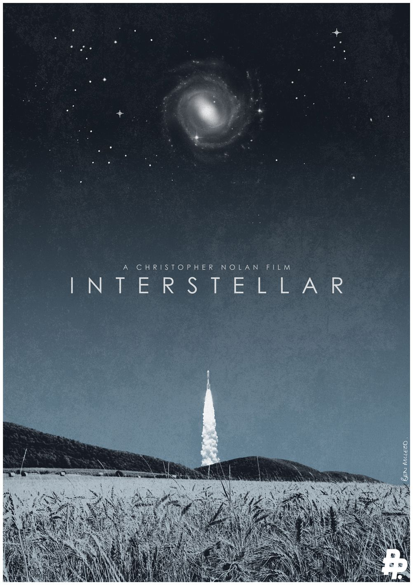
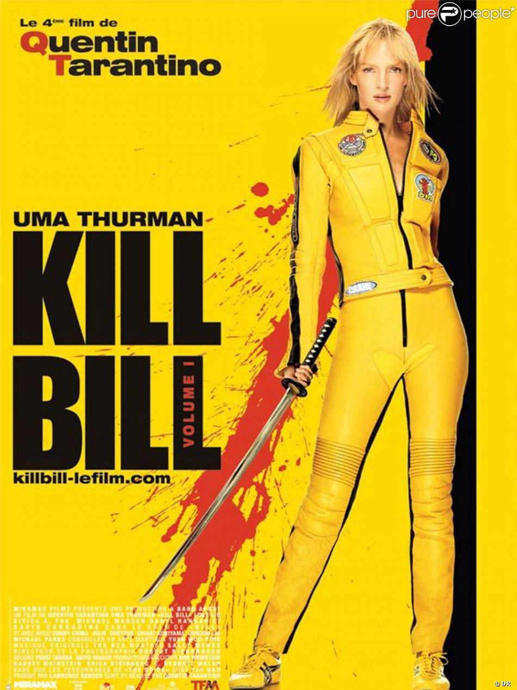
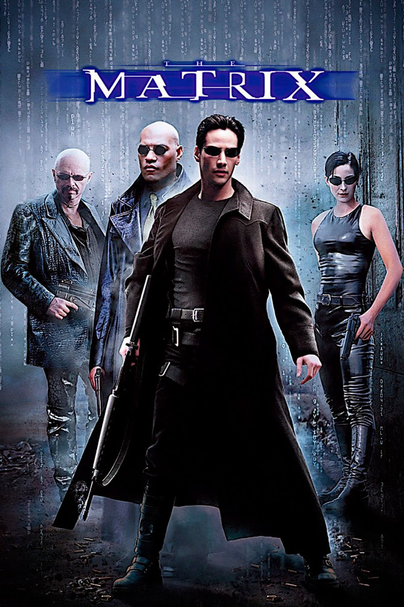

Ingrid Meunier
Elève au Wagon Bordeaux
Après avoir gravité dans le monde de la finance, puis du consulting en PME/PMI, puis dans la psychologie en entreprenariat, j'ai décidé de découvrir un nouveau mode de vie pro en devenant digitale nomade
Mon site de therapeuteMy Favorite movies
|  |
InterstellarLe film raconte les aventures d’un groupe d’explorateurs qui utilisent une faille récemment découverte dans l’espace-temps afin de repousser les limites humaines et partir à la conquête des distances astronomiques dans un voyage interstellaire. |
|  |
Kill BillAu cours d'une cérémonie de mariage en plein désert, un commando fait irruption dans la chapelle et tire sur les convives. Laissée pour morte, la Mariée enceinte retrouve ses esprits après un coma de quatre ans. |
|  |
MatrixProgrammeur anonyme dans un service administratif le jour, Thomas Anderson devient Neo la nuit venue. Morpheus l'exhorte à aller au-delà des apparences et à trouver la réponse à la question qui hante constamment ses pensées : qu'est-ce que la Matrice ? Nul ne le sait, et aucun homme n'est encore parvenu à en percer les defenses. Mais Morpheus est persuadé que Neo est l'Elu, le libérateur mythique de l'humanité annoncé selon la prophétie... |